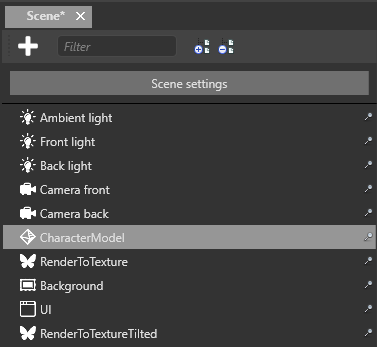
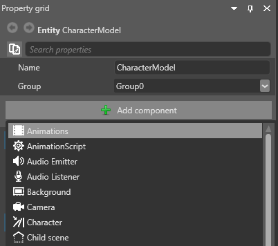
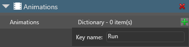
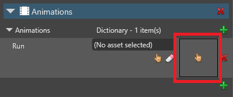
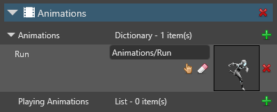
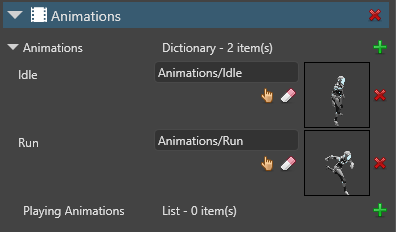
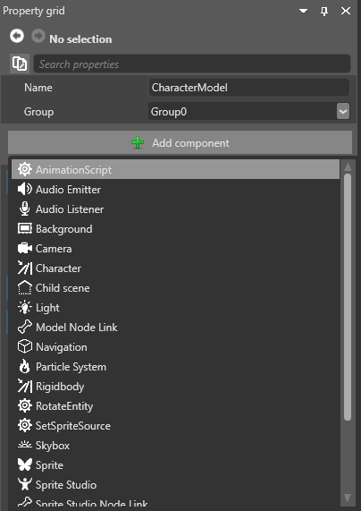
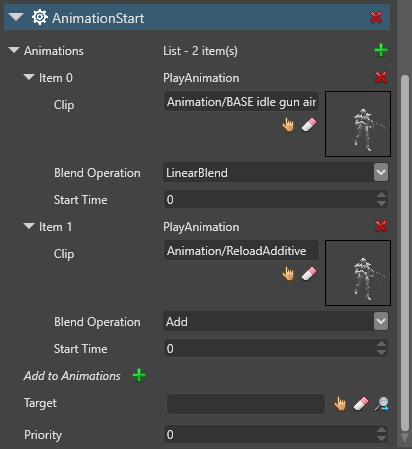

アニメーションのセットアップ
初級 デザイナー プログラマー
アニメーション アセットをインポートした後は、それをエンティティに追加し、スクリプトで再生する必要があります。
1. アニメーション アセットをエンティティに追加する
シーン エディターで、アニメーション化するエンティティを選択します。

Note
エンティティをアニメーション化するには、エンティティにモデル コンポーネントが含まれる必要があります。
［Property grid］で、［Add component］をクリックし、［Animations］を選択します。

アニメーション コンポーネントがエンティティに追加されます。
アニメーション コンポーネントのプロパティで、［Animations］の隣の
 (［Add a new item to the list］) をクリックして、新しいアニメーションをライブラリに追加します。
(［Add a new item to the list］) をクリックして、新しいアニメーションをライブラリに追加します。アニメーションの名前を入力して、Enter キーを押します。

Tip
後でスクリプトを使用してアニメーションを再生するときは、アニメーション アセットの名前ではなく、この名前を使用します。識別しやすくするため、アニメーションにはアニメーション アセットと同じ名前を付けることをお勧めします。
 (［Select an asset］) をクリックします。
(［Select an asset］) をクリックします。
［Select an asset］ウィンドウが開きます。
追加するアニメーション アセットを参照し、［Ok］をクリックします。

アニメーション アセットがエンティティに追加されます。

必要なだけいくつでもアニメーションをアニメーション コンポーネントに追加できます。［Property grid］にはアニメーションがアルファベット順に一覧表示されます。

2. アニメーションを再生するスクリプトを作成する
エンティティにアニメーションを追加した後は、スクリプトでアニメーションを再生する必要があります。
サンプル スクリプト
public class SimpleAnimationScript : StartupScript
{
public override void Start()
{
Entity.Get<AnimationComponent>().Play("Walk");
}
}
このスクリプトは、エンティティのアニメーション コンポーネントで［Walk］という名前のアニメーションを探します。
アニメーション スクリプトの作成の詳細については、「アニメーションのスクリプト」を参照してください。
3. スクリプトをエンティティに追加する
シーン エディターで、アニメーション化するエンティティを選択します。
［Property grid］で［Add component］をクリックして、追加するアニメーション スクリプトを選択します。

コンポーネントとしてスクリプトが追加されます。［Property grid］のスクリプト コンポーネントのプロパティで、スクリプトで定義したパブリック変数を調整できます。
